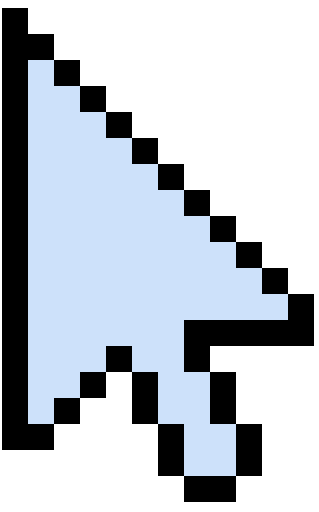
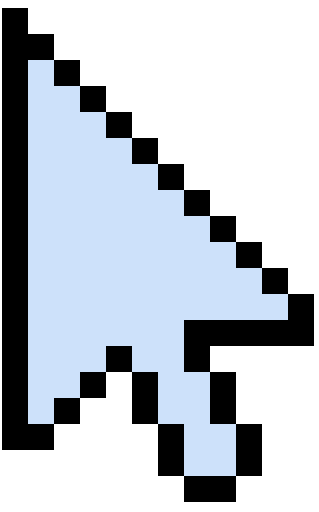
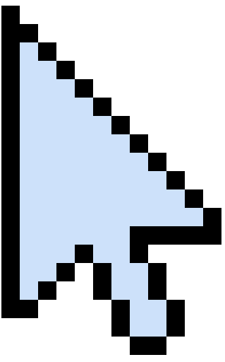
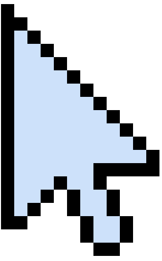

- CHARACTER:
- Weini Xie He
Language:
JAVA, PYTHON,
Tools:
JAVA, PYTHON,
Hi everyone, my name is Weini, and I’m a junior at the University of Pittsburgh, majoring in Computer Science and minoring in Information Science. In my free time, I enjoy watching movies, listening to music, playing video games, and spending time with friends. A sound that reminds me of home is the voice of my family talking. My digital tool that I use every day is Notability, it’s a note taking app that I use for classes.
- All
- Tech
- Digital
Boulder Dash
Designed and built a retro-style video game in MIPS assembly language, combining elements from Boulder Dash and Minecraft with unique, original mechanics.
MoreRestaurant Order System
A website to let customer order and the kitchen see the order made using HTML5, CSS3, JavaScript, JSON, AJAJ, Python, Flask and, SQLAlchemy.
MoreParticle System
A computational technique used to model the behavior of numerous small entities, or "particles," which follow identical rules.
MoreSelenium Testing
In a group of two we wrote a systems-level, automated black-box tests for a web app using the Selenium IDE.
MoreAirline Route Management System
Developed a Java-based backend system for airline route optimization using graph algorithms to handle complex travel queries and network analysis.
MoreBoggle Game Solver
Developed a Boggle game solver to identify all valid words (3+ letters) on a 2D letter board, adhering to adjacency rules (horizontal, vertical, diagonal) and tile reuse constraints.
MoreModified Word Puzzle Solver
Designed and implemented an abstract data type (ADT) to solve a modified 2D word search puzzle with wrap-around grid edges and 8-directional word traversal.
MoreBMP-Editing
A small command-line image editing tool to read and write uncompressed BMP image files.
MoreUnit Testing
In a group of two, we build a game called CoffeeMakerQuest using Test Driven Development to cover unit testing.
MorePerformance Testing
In a group of two, we profiled a Conway's Game of Life simulation, and improve its performance by refactoring several methods using VisualVM.
MoreStatic Testing
In a group of two we developed a full-fledged GUI program on a bean counter system using static testing techniques.
MorePath Finder
In a group of five people we design a navigation app using Figma
MoreFitness World Gym
In a group of four people we design gym website using Figma.
MoreThe Morning That Changed Everything
An audio digtal media project about an ordinary morning that takes a terrifying turn.
MoreINTERNET IS NOT A WEAPON; IT'S A TOOL.
An visual digtal media project about cyber bullying. This project is to serve as a call to action and hope to encourage viewers to reflect on their own digital behavior.
More